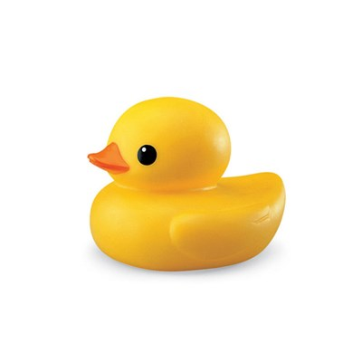

ONYOU
이 영웅은 직접적인 방어보단 인류의 기술 발전에 도모했었어. 일단 그의 스텟을 확인해봐.
- 개발한 무기 갯수 : 921만개
- 보스한테 진 횟수 : 752번
- 체력 : 107
- 회복량 : 0%
- IQ : 118
물총, 던지면 폭탄소리만 나는 시선끌기용 수류탄, 고기 굽는 냄새가 나는 방석,
심심할때 하기 좋은 두더지 잡기 게임, 전방 150m 날라가는 전동 후라이팬, 선풍기처럼 생긴 비비탄 총,
온도감지를 통한 유도가 가능한 종이 비행기...등이 있지. 온유의 옛날 기록을 확인해봐.
육개장의 대재앙에 맞서 싸운 우리의 히어로들의 죽음 속에서 온유의 죽음은 전설로 기억된다.
그 어떤 영웅들보다 그의 전략과 전투 방법은 특출났기에 대재앙들은 그를 가장 두려워하고 증오하고, 시기했다.
오랜 저항 끝에 붙잡힌 그는 처형당하는 순간까지 꼿꼿하게 영웅의 자세를 잃지 않았다.
마지막으로 던진 그의 '던지면 오리소리가 나는 오리폭탄'은 영원히 육개장 시민들에게 기억되었다.
